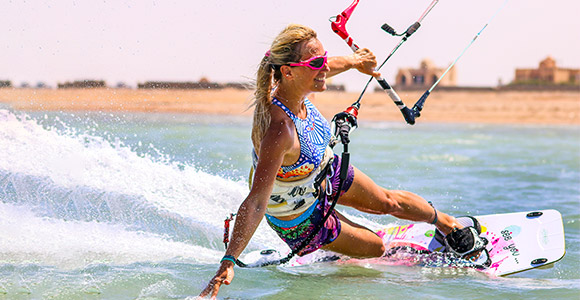
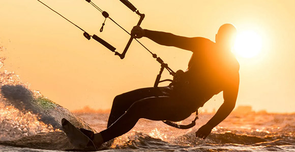
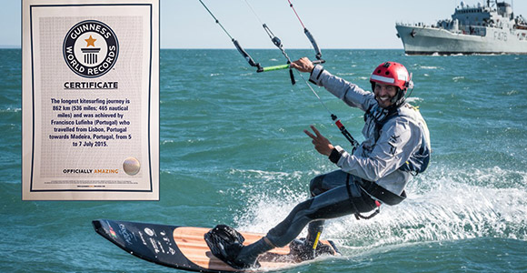

| Начало • Futsal • Speedcubing • Parkour• Teqball • Highdiving • Paintball • Sepak Takraw • Roller Derby • Kiteboarding |
| Kiteboarding | |
|
 |
|  |
|
Рекорди за най-голяма дължина измината 1. Кирсти Джонес на 13-ти Май 2006 (225 km или 121 nmi) 2. Марк Бланк на 24-ти Юли 2007 (207 km или 112 nmi) 3. Ерик Грамонд на 12-ти Октомври 2008 (419.9 km или 226.7 nmi) 4. Натали Кларк на 22-ти Март 2010 (240 km или 130 nmi) 5. Филип Мидлър на 10-ти Май 2010 (369.71 km или 199.63 nmi) 6. Бруно Срока на 19-ти Юли 2013 (444 km или 240 nmi) 7. Франциско Луфиниа на 18-ти Септември 2013 (569.5 km или 307.5 nmi) 8. Франциско Луфиниа на 7-ти Юли 2015 (874 km или 472 nmi) 9. Франциско Луфиниа на 13-ти Септември 2017 (1646 km или 889 nmi) |
 |
| Видеа | |